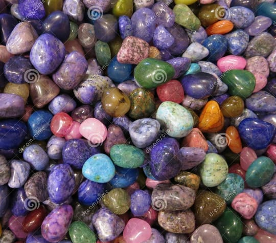

Rock, in geology, naturally occurring and coherent aggregate of one or more minerals. Such aggregatesconstitute the basic unit of which the solid Earth is comprised and typically form recognizable and mappable volumes. Rocks are commonly divided into three major classes according to the processes that resulted in their formation. These classes are igneous rocks, which have solidified from molten material called magma; sedimentary rocks, those consisting of fragments derived from preexisting rocks or of materials precipitated from solutions; and metamorphic rocks, which have been derived from either igneous or sedimentary rocks under conditions that caused changes in mineralogical composition, texture, and internal structure. These three classes, in turn, are subdivided into numerous groups and types on the basis of various factors, the most important of which are chemical, mineralogical, and textural attributes. The earth’s crust is composed of rocks and on the basis of mode of formation, rocks are classified into three major types — Igneous rocks, Sedimentary rocks and Metamorphic rocks.
| Rock Texture | Rock Structure | |
| Size | Shape | Crstaline or Fragment |
| Coarse , Fine , Glassy | Angular | |
| Rounded | ||